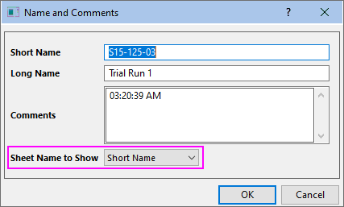
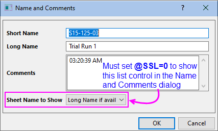
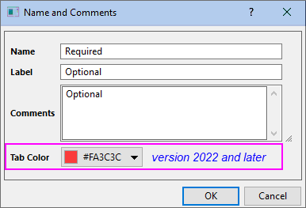

FAQ-348 Wie füge ich Name und Kommentare im Arbeitsblatt hinzu und bearbeite sie?
add-worksheet-comment-name
Letztes Update: 10.11.2021
Schnelles Bearbeiten, alle Versionen
Sie können den angezeigten Blattnamen schnell bearbeiten, indem Sie doppelt auf die Registerkarte klicken und einen neuen Namen eingeben.

Die folgenden Informationen erläutert, wie Sie mit den Optionen zum Benennen von Blättern darüber hinaus je nach Version umgehen können.
Origin 2019b und älter
- Klicken Sie mit der rechten Maustaste auf den Reiter des Arbeitsblatts und wählen Sie Name und Kommentare.
- Geben Sie den Kurznamen ein oder bearbeiten Sie ihn. Optional können Sie das auch mit Langname und Kommentaren tun.
- Verwenden Sie die Auswahlliste Zu zeigender Blattname, um zu steuern, welcher Name auf dem Reiter gezeigt wird (Standard ist der Kurzname).
- 
- Nachdem Sie die Änderungen vorgenommen haben, klicken Sie auf OK, um den Dialog zu schließen. Der Kurzname, der Langname und die Comments sind sichtbar, wenn Ihre Maus über den Arbeitsblattreiter bewegt wird.
- Um zu ändern, welcher Name auf dem Reiter angezeigt wird -- Kurzname oder Langname --, klicken Sie mit der rechten Maustaste auf den Reiter und wählen Sie eine Option unter Zu zeigender Blattname.
Origin 2020
- Klicken Sie mit der rechten Maustaste auf den Reiter des Arbeitsblatts und wählen Sie Name und Kommentare.
- Geben Sie den Kurznamen ein oder bearbeiten Sie ihn. Optional können Sie das auch mit Langname und Kommentaren tun.
- Per Standard wird der Kurzname auf dem Arbeitsblattreiter angezeigt. Um den Langnamen auf dem Arbeitsblattreiter zu zeigen, ändern Sie den Wert der Systemvariable @SSL. Wenn Sie beispielsweise ein Projekt in einer älteren Version speicherten und dort auf einigen Reitern die Kurznamen und auf einigen Reitern die Langnamen angezeigt wurden, könnten Sie
@SSL=0 setzen.
- 
- Beachten Sie außerdem, dass das Ändern von
@SSL=0 die Möglichkeit wiederherstellt, mit der rechten Maustaste auf den Arbeitsblattreiter zu klicken und eine Option unter Zu zeigender Blattname auszuwählen.
Origin 2020b und höher
-
- 
- Klicken Sie mit der rechten Maustaste auf den Reiter des Arbeitsblatts und wählen Sie Name und Kommentare.
- Geben Sie den Namen ein oder bearbeiten Sie ihn. Optional können Sie das auch mit Beschriftung und Kommentaren tun.
- Per Standard wird der Name auf dem Arbeitsblattreiter angezeigt. Um die Beschriftung auf dem Arbeitsblattreiter zu zeigen, ändern Sie den Wert der Systemvariable @SSL. Wenn Sie zum Beispiel, die Beschriftung auf allen Blattreitern anzeigen möchten, könnten Sie
@SSL=1 oder @SSL=3 setzen (Hinweis: Sie müssen möglicherweise den Dialog Name und Kommentare öffnen und auf OK klicken, um die Beschriftung anzuzeigen, nachdem Sie diese Änderung vorgenommen haben). Lesen Sie auch die obenstehenden Hinweise zu Origin 2020 zum Wiederherstellen der Möglichkeit, eine Mischung von Blattnamen und Beschriftungen in einem Projekt anzuzeigen.
Schlüsselwörter:Arbeitsblatt, Kommentare, Kurzname, Langname, Beschriftung, Blattname